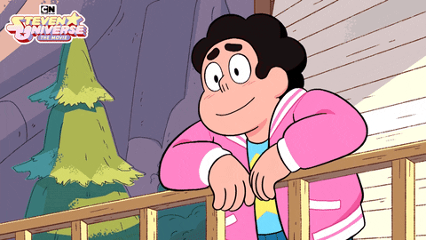

Nickolas Purvis - Portfolio
About Me
I'm currently a Junior at CodeRVA Regional High School in the Dual Enrollment program to get my Associate's Degree in computer science by the time I graduate.
Here are some brief and basic facts about me:
- My favorite color is light baby blue.
- I am 17 years old, my birthday is February 19th, 2003.
- My favorite food is anything breakfast related, but most notably are cheesy eggs.
- My favorite TV show is Steven Universe.
- My favorite movie is UP, hence the balloons and sky background.
Those are the most basic facts I could think of, so let's go into more detail about myself.
From a young age, I became heavily interested in video games. Over time, that interest of mine became stronger and during the time I was in middle school, I realized I wanted to know more about how video games worked, from the tech savvy skills that can be put to the test to the major use of communication and teamwork that is required to make a successful and functional video game.
Growing up in an era where technology is in every direction, I also slowly became interested in technology as a whole and how beneficial and convenient it is for society.
As a result of my increasing curiosity of what makes video games tick and how technology works, I applied to CodeRVA Regional High School since they were a brand new school that put a lot of emphasis on the education of computer science along with more independence than an average school. This school seemed to be a step in the right direction if I wanted to learn anything technology related.
The application process is said to be lottery based, meaning I had a random chance to be accepted into the school. There are a set number of slots avaible for each county in which kids can be admitted. I believe Hanover County, my county, only has eight slots. At first I didn't get into the school, but luckily someone from my county decided they didn't want to go to the school, resulting in me getting their position. Thinking about it now, it's crazy to think how different my life could be if that family decided they wanted their kid to go to CodeRVA instead of not going.
Back to my main point, I believe my developing interest of video games and technology is what put me in this position, at this school, in this internship... and that's cool. It's cool to think that what began as me playing my DS on the bus with my friends in elementary school or my dad suggesting I play Call of Duty has created such a deep root of interest and curiosity for me which I'm sure will last with me for the rest of my life.

Here are some brief and basic facts about me:
- My favorite color is light baby blue.
- I am 17 years old, my birthday is February 19th, 2003.
- My favorite food is anything breakfast related, but most notably are cheesy eggs.
- My favorite TV show is Steven Universe.
- My favorite movie is UP, hence the balloons and sky background.
Those are the most basic facts I could think of, so let's go into more detail about myself.
From a young age, I became heavily interested in video games. Over time, that interest of mine became stronger and during the time I was in middle school, I realized I wanted to know more about how video games worked, from the tech savvy skills that can be put to the test to the major use of communication and teamwork that is required to make a successful and functional video game.
Growing up in an era where technology is in every direction, I also slowly became interested in technology as a whole and how beneficial and convenient it is for society.
As a result of my increasing curiosity of what makes video games tick and how technology works, I applied to CodeRVA Regional High School since they were a brand new school that put a lot of emphasis on the education of computer science along with more independence than an average school. This school seemed to be a step in the right direction if I wanted to learn anything technology related.
The application process is said to be lottery based, meaning I had a random chance to be accepted into the school. There are a set number of slots avaible for each county in which kids can be admitted. I believe Hanover County, my county, only has eight slots. At first I didn't get into the school, but luckily someone from my county decided they didn't want to go to the school, resulting in me getting their position. Thinking about it now, it's crazy to think how different my life could be if that family decided they wanted their kid to go to CodeRVA instead of not going.
Back to my main point, I believe my developing interest of video games and technology is what put me in this position, at this school, in this internship... and that's cool. It's cool to think that what began as me playing my DS on the bus with my friends in elementary school or my dad suggesting I play Call of Duty has created such a deep root of interest and curiosity for me which I'm sure will last with me for the rest of my life.
{kind=link}